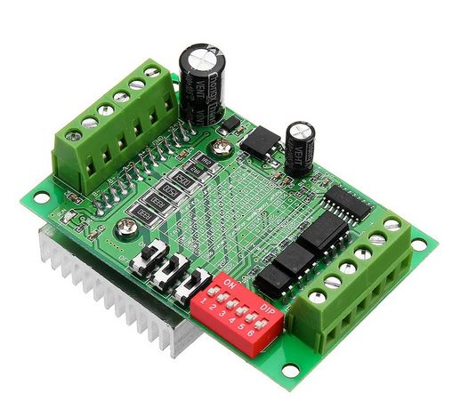

Electronique¶
- Auteur
J.Soranzo
- Date
Octobre 2020
- MàJ
17/09/2022
- Societe
VoRoBoTics
- Entity
VoLAB
Critères de choix carte contrôleur¶
Nombre d’actionneurs souhaités¶
les évidents : 3 axes steper motor X, Y et Z
La broche:
pwm
vfd
ou pas de commande électonique: manuelle
speed
direction
Les optionnels:
Aspiration
lubrifiant
probe input
Type de connection¶
direct câble au PC
wifi
Ethernet
Quelques références de cartes¶
Câblage des fin de course en mode normalement fermés. Déssoudage des cables sur les cartelettes et soudure directe sur les fc
Nouvel architecture électronique GRBL 32bits¶
Voir le chapitre logiciel.
D’un point de vue hardware pas grand chose à dire. Achat et câblage conformément au site officiel
Site : GRBL 32bits Board V2.0
Fin de course avec les cartes habituellement utilisées poour les imprimantes 3D : on n’en utilise que le switch en se soudant directement dessus.
Sur les 3 axes 1 seul Z n’a pas fonctionné. Nous avons coupé une des broche du switch pour la déconnecter de la carte et se souder directement dessus afin de ne plus être perturbé et cela fonctionne.
Explication: sur ce type de firmware les fins de course sont de type contact normalement fermé. Pas de carte d’interface nécessaire juste un contact on lui envoie du 5V et il ouvre à la masse donc ce 5V peut alimenter la carte d’interface si on ne prend pas garde au sens des 2 fils utilisés. On les a mis dans le bon sens pour X et Y et pas de chance pour Z. Plutôt que de couper la broche on aurait pu permuter simplement les 2 fils en entrée de carte.
Autre problème le fonctionne: le Nunchuck qui ne fonctionne pas. D’après une expertise sur une autre carte ESP avec exemple ARDUINO simple, on n’obtient pas de résultats encourageant. Visiblement les librairies sont taillées pour un Nunchuck officiel. Voir Écueil logiciel 5
Remplacement ESP-32¶

ESP32 dev board 38 pin sur la carte GRBL 32
Il existe également des ESP 32 dev board 30 pin attention !
Palpeur outil¶
Passe par un bouton personnalisé donc : Créer des boutons personnalisé
Écueil n° 7 : Pb axe X le 29/01/2022¶
Lors des premiers essais de gravure pb sur l’axe X seulement. Ne semblent pas correspondre à une perte de pas mais plutôt un gain de pas !
Driver de moteurs échangés entre axe X et Y: pas mieux. ventilation des drivers. Léger mieux
A faire : remplacement moteur X par un de secours. Lubrification de l’axe (la tige filetée est collante) recâblage plus propre. pas mieux
Remplacement du moteur par un NEMA27 pas mieux
12/02/2022 : des pb d’incohérence de position subsistent.
Essais de réduire l’accélération maximum dans GRBL de 80mm/s2 à 50 sur x et Y Z était déjà à 50.
Mécaniquement double remplacment de la vis à bille pour revenir à celle d’origine qui semble être la meilleur de toutes celles à notre disposition
$120 accel passée à 20 $110 : 550
19/03/2022 : tout recâblé proprement. apparament pas mieux. Essai suivant : générer un G-CODE dans INSKAPE.
Choix drivers moteurs¶
BL-TB6560-v2.0
{kind=link}
How to connect to the main board ? Aucune information trouvées.
Obligé de les reconstruire à partir des photos fournies sur leur Wiki (celui de la carte MKS Gen)
Utiliser
EN STEP dir et GND
Pour l’axe X, cela donne:
D38 : EN
D54 : CLK
D55 : DIR
Nouvelles cartes de puissance¶
TopDirect TB6600 Stepper Moteur Driver sur AMAZON
{kind=link}
Plus de pertes de pas 3 axes vérifiés
Commande G-code utile pour les essais¶
Commande émise directement depuis ARDUINO IDE. Com speed pour Marlin : 250.000
G1 X20
G28 X : home X
M119 : end stop - pas implémenté dans GRBL
M115 : firmware
M203 X15 : set feedrate à 15unit/s soit 15mm/s
M18 : arrêt de tous les moteurs
M203 Z10 : change feed rate (fréquence moteur)
Sur le site rep rap ;-)
Alimentation¶
Carte MKS : 12V/24V
Les TB6560 sont aussi en 24V
Alimentation de la Charlie Robot¶
2 alimentation sur la carte ISEL d'origine
Un transfo taurique 28V/3A et 9Vefficace/1A soit 12.7Vmax
LV : fus de 1.5A LM317 muni d'un pont diviseur 733, 234ohm au gnd soit
1.25(1+733/234)=5.16V
A modifier pour sortir plus
piquer directement le Vin du régulateur pour l'envoyer à la carte MKS
ou alors alimenter la carte directement en 5V
HV
FUS : 6.3A, Pas de régulateur Mesurée à 39V CC (28*1.414 =39.6V)
Connecteur vert
Gros dissipateur vers le haut
- Low voltage
+ low voltage
NC
NC
- High voltage
+ High voltage
Adaptation de la carte MKS Gen 1.4¶
Choix de cette carte car disponible dans le fablab Volab. Carte à base de 2560 donc 8 bits.
{kind=link}
Dimensions¶
{kind=link}
Essais des moteurs¶
Carac moteurs¶
Brochage des moteurs: référence des moteurs:
ECM268-E2.8B-1
473030
DC 2.8V UNI 2.8A BI4.0A
473030 est équivalent au MS-110
{kind=link}
1.8°/pas soit 200pas par tour
Avec un ARDUINO¶
Exemple ARDUINO directe.
Suite essais avec Marlin, on revient aux tests directes avec ARD.
Quel exemple ??? J’ai copié le répertoire stepper dans le compte projet sous 01-maquettageFaisabilite
Essai RS à 250kbauds pour gerder la même vitesse RS que Grbl. Exemple stepper_oneevolution
Retouche au début du fichier:
Stepper myStepper(stepsPerRevolution, 8, 9, 10, 11);
Nous on a:
D38 : EN
D54 : CLK
D55 : DIR
Il semblerait que cet exemple ARDUINO soit fait pour piloter directement les bobines donc cela n’est probablement pas celui là que nous avions utilisé…
Dans carnet de croquis, il y a JsZstepperA4988:
Essais concluant, le moteur tourne en continu. durée des step 2x1ms (500Hz). Essais à 0.6ms ok à 2x500us (1KHz) tourne rond, au delà non
Important sous 24V (essais jusqu’à 30v) sur la datasheet et la courbe ci-dessus on a 63V. Attention toutefois la carte MKS ne supporte que du 12/24V mais la tension des moteurs reste au niveau des cartes TB6560
Aujourd’hui, 13/3/2021, j’ai retrouvé le répertoire des essais précédent:
0017-CNC\projet\03-conception\2020\testMoteur
Carte d’interface ISEL¶
La petite carte sur les moteurs:
black - orange/white
orange - black/white
red - yellow/white
yellow - red/white
Donc d’après la datasheet du moteur, on relie (1,3) et (2,4) donc mise en // des bobine et (5,7) et (6,8).
Bobine 1 : black-orange
Bobine 2 : red-yellow
Essais sur banc¶
L’alimentation des moteurs avec une alimentation stabilisée 24V 3A n’a pas été concluante.
29/5/2021: pb constaté sur l’axe Z, en croisant la voie X et la voie Z on s’apperçois que cela proviendrait de la loi de commande du moteur. On essayant diffrentes configuratiopn de la carte TB6560 pas d’amélioration. On décide de remonter tout et de voir par la suite avec GRBL.
Juin 2021:
Problème de homing de l’axe Y : voir dans la partie logiciel
Nouvelle essai du 04/09/2021 Conditions d’essais: Grbl 1.110-160-160W_engl, UGS v2..0.8, carte MKS, TB6560 Avec une alim stabilisée 30V/3A : les moteurs ne démarrent même pas.
Essais avec une alim de PC 19V/4.73A fonctionnelle mais encore des pertes de pas 16/100 environ aléatoire. Nous avons remarquer des vis qui pourrais géner la descente.
Recherche google grbl perte de pas
$1 : Step idle delay, milliseconds
$112 : max speed Z
$122 : accel Z
Aucun des essais mené n’a permis de ne pas avoir de perte de pas sauf le couple 20,100 (acc, vit)
Essais alim 40V concluant mais pas meilleur au niveau de la précision.
Todo remplacer carte moteur X : fait le 11/09/2021
La LED fin de course X ne s’allume pas.
Connectique¶
SUB D 9 contacts
broche |
signal |
Carte moteur |
Cable réseau |
|---|---|---|---|
1 |
A+ |
black |
bleu |
2 |
A- |
orange |
orange |
3 |
|||
4 |
FCMin |
blanc maron |
|
5 |
P5V |
vert |
|
6 |
B+ |
red |
orange/blanc |
7 |
B- |
yellow |
blanc/bleu |
8 |
FCmax |
||
9 |
GND |
maron |
Côté contrôleur : broche femelle.
{kind=link}
{kind=link}
{kind=link}
{kind=link}
{kind=link}
{kind=link}